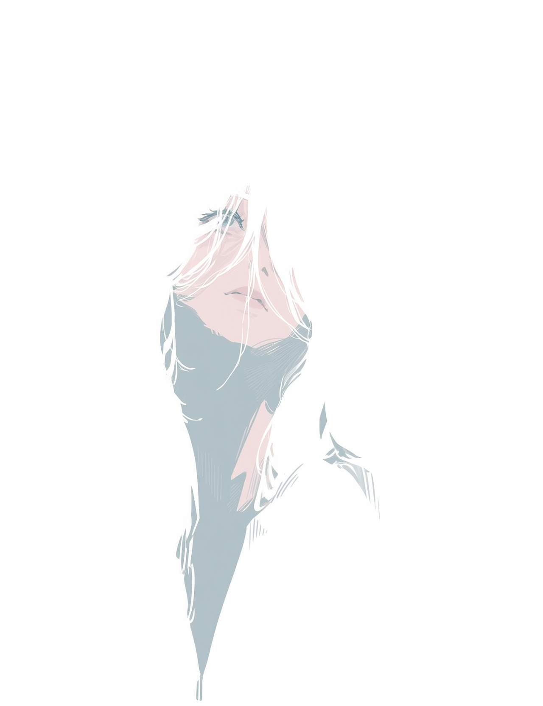

間奏
INTERLUDE
雪落
SNOW FALLS AGAIN
NOCTCODE
00:00.0
墨
03:33
THANK YOU FOR LISTENING
雪落
SNOW FALLS AGAIN
NOCTCODE
·
0094
再听一次
VINYL SESSION · 0094
SNOW FALLS AGAIN
NOCTCODE
点 击 播 放
建议佩戴耳机
·
33⅓ RPM
直开模式
：浏览器安全策略屏蔽了声谱分析，声音不受影响，可视化为模拟驱动。
运行
python serve.py
可获得完整实时频谱。
开启完整可视化
×
音频加载失败，请确认
assets/
下 config.js 指向的音轨存在。
调试面板
`
×
背景亮度
0.62
暗角
1.00
粒子数量
×1.00
粒子尺寸
×1.00
粒子速度
×1.00
粒子形态
默认（按类型）
圆点
光痕
星芒
—
重置
需要启用 JavaScript 才能播放。